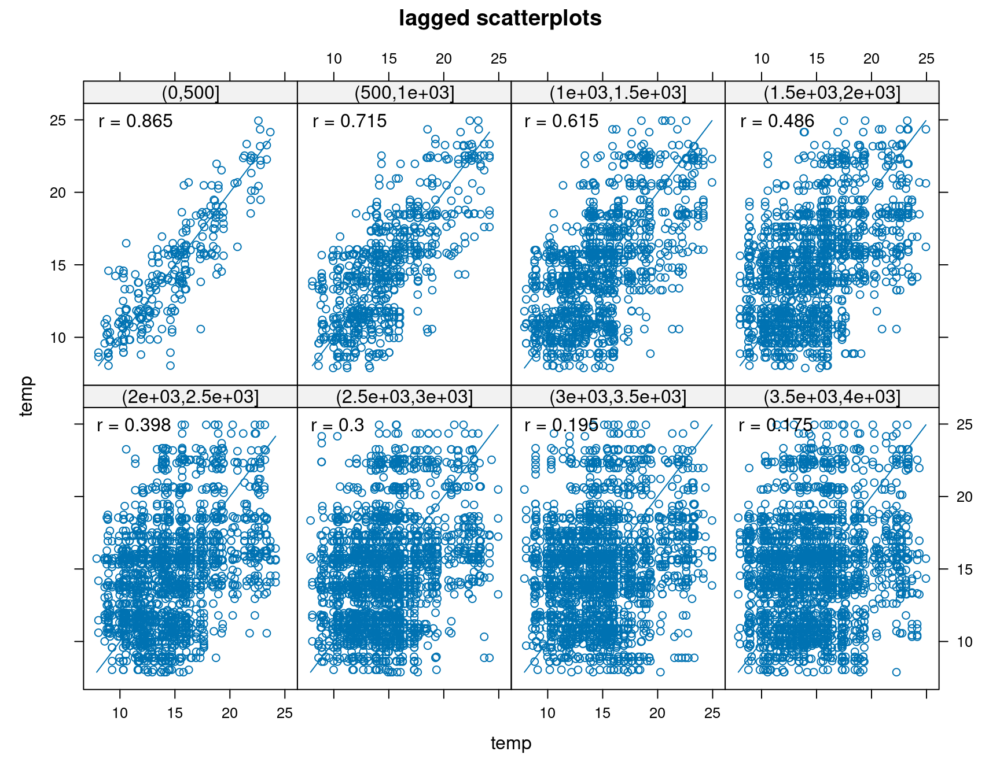
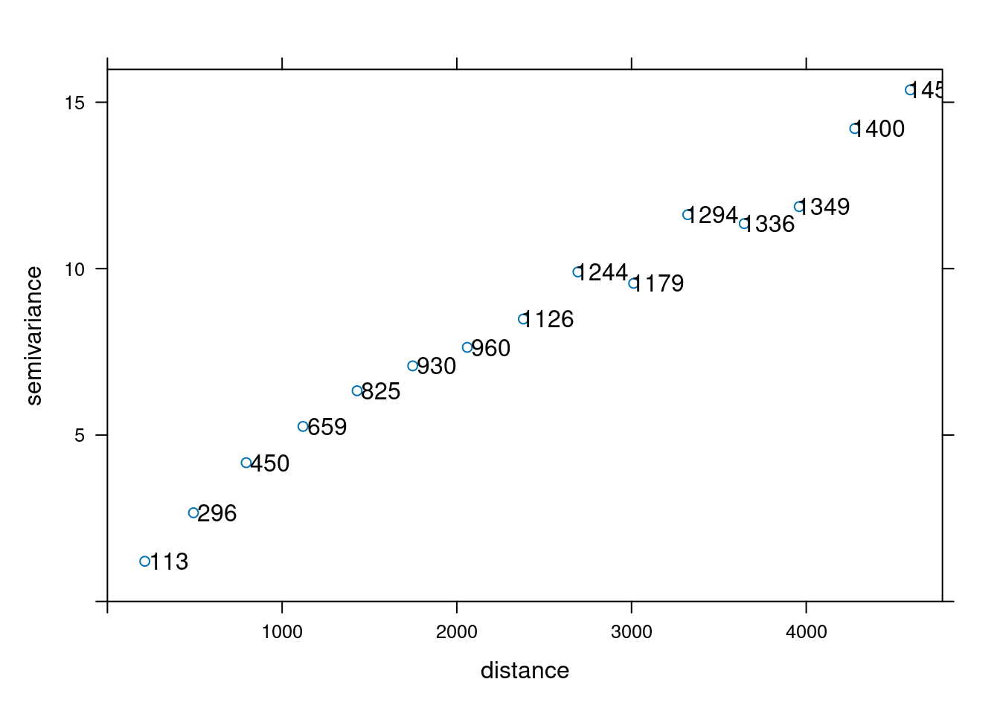
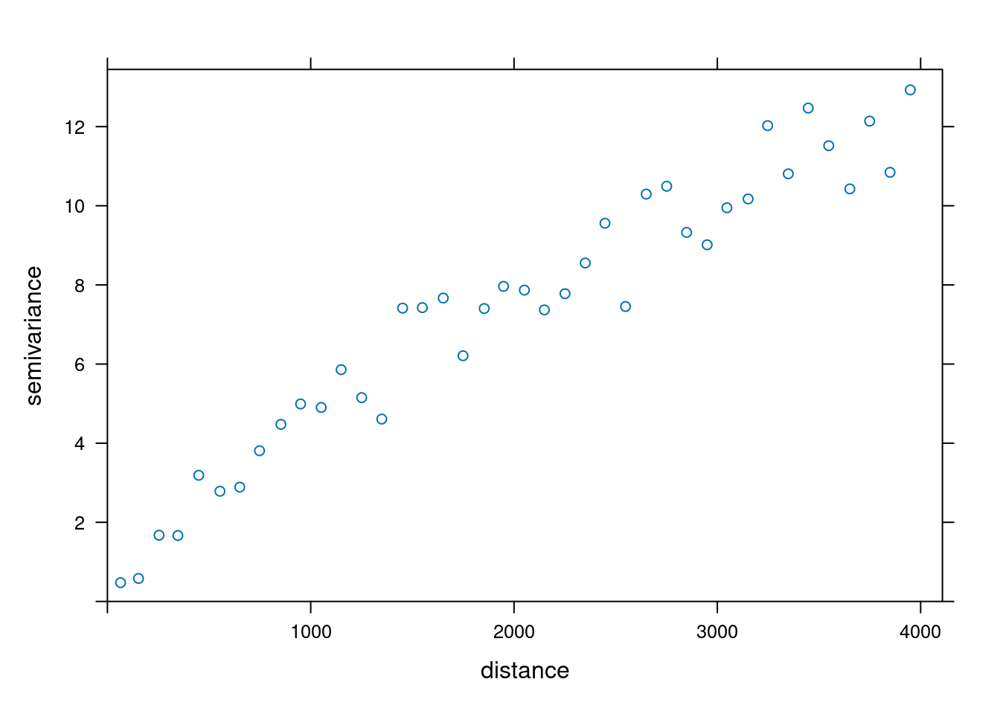
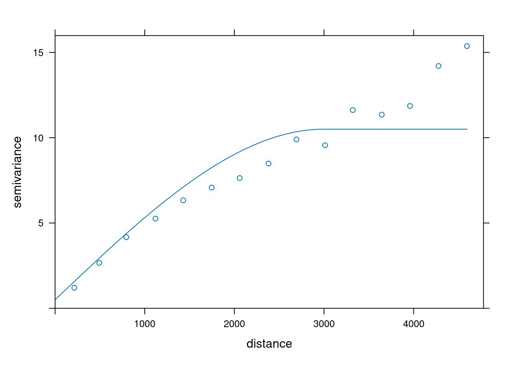
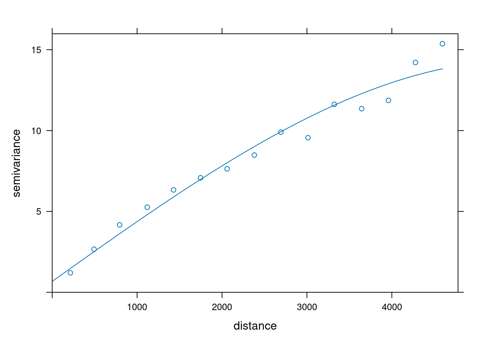
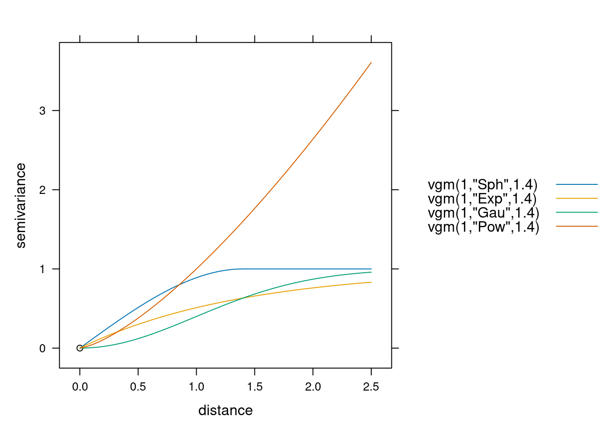

library(sf)
library(gstat)
library(dplyr)9 Analiza i modelowanie struktury przestrzennej
Czego się nauczysz
Po tym rozdziale potrafisz wykonać w R:
- sporządzić wykres rozrzutu z przesunięciem (
hscat()), - wykonać obliczenia pomocnicze potrzebne do doboru parametrów semiwariogramu,
- obliczyć i wyświetlić semiwariogram empiryczny (
variogram()), - zmienić maksymalny zasięg semiwariogramu i szerokość odstępów (
cutoff,width), - zdefiniować model semiwariogramu (
vgm()) i dopasować jego parametry (fit.variogram()), - zapisać dopasowany model do pliku.
Rozumiesz i umiesz zinterpretować:
- co pokazuje wykres rozrzutu z przesunięciem i jak odczytać z niego zmienność przestrzenną,
- trzy parametry modelu: efekt samorodka, semiwariancję progową i zasięg — oraz różnicę między semiwariancją progową a jej częścią cząstkową (
psill), - dlaczego semiwariancja progowa jest tylko zbliżona do wariancji próby,
- jak
cutoffiwidthzmieniają kształt semiwariogramu i kiedy naruszają reguły doboru parametrów, - czym różnią się podstawowe modele, co oznacza zasięg praktyczny i dlaczego nie jest on tym samym co kolumna
range, - jak porównać dopasowanie kilku modeli.
Teoria: Najważniejsze informacje. Funkcje: Załącznik B. Słownik: Załącznik D.
9.1 Wprowadzenie
Metody deterministyczne z Rozdział 8 szacowały wartości, nie pytając, jak zmienna zachowuje się w przestrzeni. Wykładnik potęgowy IDW ustalaliśmy arbitralnie, bo nic w danych nie wskazywało, jaka wartość jest właściwa.
Geostatystyka zaczyna od drugiej strony: najpierw opisuje strukturę przestrzenną zmiennej, a dopiero potem używa tego opisu do estymacji. Narzędziem opisu jest semiwariogram — wykres pokazujący, jak bardzo różnią się od siebie wartości zmierzone w punktach oddalonych o zadaną odległość. Do semiwariogramu empirycznego dopasowujemy model: funkcję ciągłą, z której można odczytać semiwariancję dla dowolnej odległości, także takiej, która w danych nie wystąpiła.
Ten rozdział kończy się dopasowanym modelem. Model jest wejściem do estymacji (Rozdział 10), a ocena jakości tej estymacji należy do Rozdział 11.
9.2 Struktura obiektów: semiwariogram empiryczny i model
Funkcja variogram() zwraca ramkę danych, w której jeden wiersz to jeden odstęp (ang. lag) — przedział odległości. Kolumny: np — liczba par punktów w odstępie, dist — średnia odległość w odstępie, gamma — uśredniona semiwariancja par z tego odstępu.
Funkcja vgm() i fit.variogram() zwracają obiekt klasy variogramModel — również ramkę danych, ale o innym znaczeniu kolumn. Jeden wiersz to jedna składowa modelu:
| Kolumna | Znaczenie |
|---|---|
model |
nazwa funkcji składowej: Nug, Sph, Exp, Gau, Pow |
psill |
semiwariancja progowa cząstkowa wniesiona przez tę składową |
range |
parametr zasięgu składowej — nie zawsze równy zasięgowi praktycznemu (patrz niżej); dla modelu potęgowego — wykładnik potęgowy |
Model z efektem samorodka ma dwa wiersze: Nug i funkcję zasadniczą. Stąd ważne rozróżnienie:
Semiwariancja progowa (sill) to maksymalny poziom zmienności w kontekście przestrzennym — suma wszystkich składowych. Semiwariancja progowa cząstkowa (
psill) to wkład jednej składowej.\[\text{sill} = \text{nugget} + \text{psill}\]
Pomylenie tych dwóch wielkości zaniża odczytaną semiwariancję progową dokładnie o wartość efektu samorodka.
9.3 Semiwariogram w R
| Czynność | Funkcja | Argumenty istotne |
|---|---|---|
| wykres rozrzutu z przesunięciem | hscat() |
breaks |
| chmura semiwariogramu | variogram(cloud = TRUE) |
— |
| semiwariogram empiryczny | variogram() |
cutoff, width |
| wyświetlenie semiwariogramu | plot() |
plot.numbers |
| definicja modelu | vgm() |
psill, model, range, nugget |
| dopasowanie parametrów modelu | fit.variogram() |
model startowy |
| przegląd dostępnych modeli | show.vgms() |
models, as.groups |
Pełne zestawienie funkcji — Załącznik B.
9.4 Przykład: temperatura powietrza
Kroki analizy
- Wczytanie danych —
read.csv(),filter(),st_as_sf(),read_sf(). - Wykres rozrzutu z przesunięciem —
hscat(). - Obliczenia pomocnicze przed doborem parametrów —
st_area(). - Semiwariogram empiryczny —
variogram(),plot(). - Modelowanie —
vgm(),fit.variogram(). - Zapis dopasowanego modelu —
saveRDS().
Kod spoza tych sześciu kroków jest objaśnieniem: nie trzeba go uruchamiać, żeby wykonać analizę.
Krok 1: dane
Pracujemy na tych samych danych, co w Rozdział 8: pomiary temperatury powietrza (data/punkty.csv) i granica obszaru badań (data/granica.gpkg). Granica posłuży tym razem wyłącznie do obliczenia powierzchni obszaru.
punkty = read.csv("data/punkty.csv") |>
filter(!is.na(temp)) |>
st_as_sf(coords = c("x", "y"), crs = "EPSG:2180")
granica = read_sf("data/granica.gpkg")
nrow(punkty)[1] 247Krok 2: wykres rozrzutu z przesunięciem
W klasycznej statystyce zależność między dwiema zmiennymi opisuje współczynnik korelacji. W geostatystyce badamy jedną zmienną, ale w dwóch lokalizacjach oddalonych o dystans \(h\) (odstęp, ang. lag). Wykres rozrzutu z przesunięciem (ang. h-scatterplot) pokazuje tę zależność osobno dla kolejnych przedziałów odległości.
Argument breaks wyznacza granice przedziałów — poniżej co 500 m, do 4 km.
hscat(temp ~ 1, data = punkty, breaks = seq(0, 4000, by = 500))
Każdy panel odpowiada jednemu przedziałowi odległości, a liczba nad nim to współczynnik korelacji par punktów z tego przedziału. Korelacja maleje wraz z odległością: pary oddalone o mniej niż 500 m mają wartości bardzo do siebie podobne, pary oddalone o ponad 3,5 km — już nie. To jest właśnie zmienność przestrzenna, którą semiwariogram opisze jedną krzywą zamiast ośmioma panelami.
Krok 3: obliczenia pomocnicze
Przed policzeniem semiwariogramu warto znać trzy wielkości, które pomagają ocenić, czy jego parametry są sensowne: liczbę par obserwacji, średnią odległość między punktami i połowę pierwiastka z powierzchni obszaru.
# liczba wszystkich par punktów: 1/2 * n * (n - 1)
liczba_par = 0.5 * nrow(punkty) * (nrow(punkty) - 1)
# powierzchnia obszaru i średnia odległość między punktami
powierzchnia = as.numeric(st_area(granica))
srednia_odleglosc = sqrt(powierzchnia / nrow(punkty))
# połowa pierwiastka z powierzchni — orientacyjny maksymalny zasięg semiwariogramu
polowa_pierwiastka = 0.5 * sqrt(powierzchnia)
c(liczba_par = liczba_par,
srednia_odleglosc = srednia_odleglosc,
polowa_pierwiastka = polowa_pierwiastka) liczba_par srednia_odleglosc polowa_pierwiastka
30381.0000 506.5428 3980.4724 Przy doborze parametrów semiwariogramu stosuje się kilka reguł praktycznych (Nowosad, b.d.):
- w każdym odstępie powinno się znaleźć co najmniej 30 par punktów,
- maksymalny zasięg semiwariogramu (ang. cutoff distance) to połowa pierwiastka z badanej powierzchni,
- liczba odstępów nie powinna być mniejsza niż 10,
- maksymalny zasięg semiwariogramu powinien być dłuższy o 10–15% od zasięgu zjawiska.
Krok 4: semiwariogram empiryczny
Funkcja variogram() wymaga wskazania zmiennej (temp ~ 1 — zmienna bez zmiennych objaśniających) oraz zbioru punktowego.
vario = variogram(temp ~ 1, locations = punkty)
vario np dist gamma dir.hor dir.ver id
1 113 214.0615 1.205854 0 0 var1
2 296 492.6029 2.664303 0 0 var1
3 450 794.4754 4.168964 0 0 var1
4 659 1119.4215 5.258232 0 0 var1
5 825 1429.3537 6.330027 0 0 var1
6 930 1747.4842 7.078197 0 0 var1
7 960 2059.9222 7.634849 0 0 var1
8 1126 2380.7339 8.485727 0 0 var1
9 1244 2693.4708 9.900739 0 0 var1
10 1179 3012.0195 9.558005 0 0 var1
11 1294 3321.8058 11.621229 0 0 var1
12 1336 3645.0145 11.352249 0 0 var1
13 1349 3959.8583 11.863130 0 0 var1
14 1400 4277.9695 14.207606 0 0 var1
15 1458 4595.7696 15.371019 0 0 var1Semiwariancja rośnie wraz z odległością: od 1.21 przy średniej odległości 214 m do 15.37 przy 4596 m. Jest to ten sam fakt, który pokazał wykres rozrzutu z przesunięciem, wyrażony miarą niepodobieństwa zamiast miarą podobieństwa.
Argument plot.numbers = TRUE dopisuje do każdego punktu liczbę par, z których policzono semiwariancję.
plot(vario, plot.numbers = TRUE)
Domyślnie gstat przyjmuje maksymalny zasięg równy jednej trzeciej najdłuższej przekątnej obszaru, a szerokość odstępu — maksymalny zasięg podzielony przez 15. Daje to tutaj 15 odstępów sięgających 4596 m, przy czym najmniej liczny odstęp zawiera 113 par — znacznie powyżej progu 30.
Oba parametry można ustawić samodzielnie.
vario_waski = variogram(temp ~ 1, locations = punkty, cutoff = 4000, width = 100)
plot(vario_waski)
Zwróć uwagę, co zrobiło zawężenie odstępów do 100 m: odstępów jest teraz 40, ale najmniej liczny zawiera tylko 11 par — poniżej progu 30. Punkty na wykresie układają się nieregularnie, bo każdy z nich oparty jest na małej liczbie par. Reguła doboru parametrów została tu naruszona i widać to na rycinie.
Krok 5: modelowanie
Do semiwariogramu empirycznego dopasowujemy model — funkcję ciągłą, z której odczytamy semiwariancję dla dowolnej odległości. Odbywa się to w dwóch etapach: najpierw podajemy model startowy z przybliżonymi parametrami, potem funkcja fit.variogram() dopasowuje je do danych.
Model startowy definiuje funkcja vgm(). Jej argumenty odczytujemy z wykresu semiwariogramu empirycznego:
model— kształt funkcji; tutaj sferyczny ("Sph"),psill— semiwariancja progowa cząstkowa: poziom, na którym krzywa się stabilizuje,range— zasięg: odległość, na której krzywa osiąga ten poziom,nugget— efekt samorodka: przesunięcie krzywej na osi y przy odległości bliskiej zeru.
model_startowy = vgm(psill = 10, model = "Sph", range = 3000, nugget = 0.5)
model_startowy model psill range
1 Nug 0.5 0
2 Sph 10.0 3000plot(vario, model = model_startowy)
Model startowy ma dwa wiersze: Nug z wartością efektu samorodka i Sph z semiwariancją progową cząstkową oraz zasięgiem. Krzywa przebiega wyraźnie poniżej punktów empirycznych — parametry odczytane z wykresu były tylko przybliżeniem.
model = fit.variogram(vario, model_startowy)
model model psill range
1 Nug 0.6755637 0.0
2 Sph 13.6466875 5479.9plot(vario, model = model)
Po dopasowaniu krzywa przechodzi przez punkty empiryczne.
Kolumna
range nie zawsze jest zasięgiem praktycznym
Dokumentacja ?vgm opisuje range jako parametr zasięgu składowej modelu, a nie jako zasięg praktyczny. Jest to istotne, bo gstat zapisuje modele asymptotyczne w postaci bez mnożnika 3:
\[\gamma(h) = C\left[1 - \exp(-h/a)\right] \quad (\mathrm{Exp}), \qquad \gamma(h) = C\left[1 - \exp(-h^{2}/a^{2})\right] \quad (\mathrm{Gau})\]
W tej postaci przy \(h = a\) model osiąga nie 95%, lecz 63,2% semiwariancji progowej. Zasięg praktyczny trzeba więc przeliczyć:
| Model | range zwracane przez fit.variogram() |
Zasięg praktyczny (95% semiwariancji progowej) |
|---|---|---|
Sph |
zasięg \(a\) | \(a\) — model osiąga semiwariancję progową dokładnie na zasięgu |
Exp |
parametr \(a\) | \(3a\) |
Gau |
parametr \(a\) | \(a\sqrt{3}\) |
Pow |
wykładnik potęgowy | nie istnieje — model nieograniczony |
Przeliczenie sprawdzamy funkcją variogramLine(), która liczy wartości modelu dla zadanych odległości:
# jaki udzial semiwariancji progowej model osiaga na odleglosci rownej parametrowi range
sapply(c("Sph", "Exp", "Gau"), function(m)
round(variogramLine(vgm(1, m, 1000), dist_vector = 1000)$gamma, 4)) Sph Exp Gau
1.0000 0.6321 0.6321 Model używany w tym rozdziale jest sferyczny, więc jego range (5480 m) jest zasięgiem. Przy modelu wykładniczym lub gaussowskim odczytanie range jako zasięgu zaniżyłoby go kilkukrotnie.
Objaśnienie — poza ścieżką zadania
Pakiet gstat udostępnia dwadzieścia modeli podstawowych; ich listę wypisuje vgm() wywołana bez argumentów. Cztery najczęściej używane można porównać na jednym wykresie:
show.vgms(models = c("Sph", "Exp", "Gau", "Pow"),
range = 1.4, max = 2.5, as.groups = TRUE)
Trzy cechy odróżniają te funkcje w praktyce:
- sferyczny (
Sph) osiąga semiwariancję progową dokładnie na odległości równej zasięgowi i dalej pozostaje stały, - wykładniczy (
Exp) i gaussowski (Gau) zbliżają się do niej asymptotycznie, więc podaje się dla nich zasięg praktyczny — odległość, na której model osiąga 95% semiwariancji progowej; gaussowski ma przy tym charakterystyczny paraboliczny początek, - potęgowy (
Pow) rośnie bez ograniczenia, więc nie ma zasięgu; w jego wyniku kolumnarangezawiera wykładnik potęgowy, nie odległość.
Ostatnia różnica ma konsekwencję praktyczną: wywołanie fit.variogram(vario, vgm(model = "Pow", nugget = 1)) przerywa działanie komunikatem power model range (parameter) cannot exceed 2.0, bo wartość startowa range jest interpretowana jako wykładnik. Dla modelu potęgowego trzeba podać range mniejsze od 2.
Krok 6: zapis modelu
Dopasowany model jest wejściem do estymacji w Rozdział 10, więc zapisujemy go do pliku.
dir.create("out", showWarnings = FALSE)
saveRDS(model, "out/model_semiwariogramu.rds")Interpretacja wyniku
Zmienna wykazuje wyraźną strukturę przestrzenną. Semiwariancja rośnie z odległością — wartości zmierzone blisko siebie są do siebie podobne, a podobieństwo maleje wraz z oddaleniem. Gdyby struktury nie było, semiwariogram byłby płaski.
Dopasowany model ma trzy parametry:
- efekt samorodka (ang. nugget) = 0.6756. Jest to szacowana wariancja dla odstępu zerowego: zmienność, której semiwariogram nie wyjaśnia odległością. Składają się na nią błąd pomiarowy, zmienność w skali mniejszej niż najkrótszy odstęp między punktami oraz zmienność w obrębie samej próbki.
- semiwariancja progowa cząstkowa (
psill) = 13.6467, a więc semiwariancja progowa = 14.3223. - zasięg = 5480 m. Jest to odległość, na której semiwariogram osiąga semiwariancję progową — maksymalny zasięg autokorelacji danych. Pary punktów oddalone o więcej niż ta odległość nie są już do siebie podobne bardziej niż dowolne dwa punkty w obszarze.
Semiwariancja progowa nie jest wariancją próby. Wariancja zmiennej temp wynosi 15.7853, a semiwariancja progowa modelu 14.3223 — różnica 1.4631. Semiwariancja progowa jest wartością zbliżoną do wariancji próby wtedy, gdy analizowana cecha jest stacjonarna; nie jest to tożsamość.
Zasięg 5480 m jest większy od maksymalnego zasięgu semiwariogramu policzonego regułą połowy pierwiastka z powierzchni (3980 m) i zbliżony do zasięgu domyślnego (4596 m). Oznacza to, że struktura przestrzenna sięga niemal całego obszaru badań, a odczytana wartość zasięgu jest obarczona niepewnością — model opisuje najdalszy fragment krzywej na podstawie odstępów położonych przy samej granicy zakresu.
Objaśnienie — poza ścieżką zadania
Do tych samych danych można dopasować różne modele. Funkcja fit.variogram() zwraca miarę dopasowania w atrybucie SSErr — im mniejsza, tym krzywa bliżej punktów empirycznych.
dopasowanie = sapply(c("Sph", "Exp", "Gau"), function(m) {
f = fit.variogram(vario, vgm(psill = 10, model = m, range = 3000, nugget = 0.5))
c(nugget = f$psill[1], psill = f$psill[2], sill = sum(f$psill),
range = f$range[2], SSErr = attr(f, "SSErr"))
})
round(t(dopasowanie), 4) nugget psill sill range SSErr
Sph 0.6756 13.6467 14.3223 5479.900 0.0013
Exp 0.3434 20.2442 20.5877 4250.987 0.0008
Gau 1.3035 9.4534 10.7568 1550.690 0.0048Dla tych danych najlepiej dopasowuje się model wykładniczy, a nie sferyczny, którego użyliśmy w Kroku 5. Różnica w SSErr jest jednak niewielka, a kolumny range nie są wprost porównywalne między modelami: dla modelu sferycznego range jest zasięgiem, a dla wykładniczego i gaussowskiego — parametrem funkcji, z którego zasięg praktyczny trzeba przeliczyć (patrz ramka wyżej). Wybór modelu jest decyzją analityka opartą na kształcie krzywej w początkowym odcinku, nie wyłącznie na mierze dopasowania.
# zasieg praktyczny (95% semiwariancji progowej) przeliczony z parametru range
przelicz = c(Sph = 1, Exp = 3, Gau = sqrt(3))
round(dopasowanie["range", ] * przelicz[colnames(dopasowanie)]) Sph Exp Gau
5480 12753 2686 9.5 Pytania kontrolne
1. Czym jest semiwariancja i czym różni się od korelacji?
Sprawdź odpowiedź
Semiwariancja to połowa średniej kwadratu różnicy między wartościami badanej zmiennej w dwóch lokalizacjach oddalonych o wektor \(h\). Jest miarą niepodobieństwa: rośnie, gdy wartości się od siebie różnią.
Korelacja opisuje zależność między dwiema zmiennymi; semiwariancja opisuje zależność jednej zmiennej od samej siebie, mierzoną między dwoma punktami oddalonymi o zadany dystans. Dlatego semiwariancja rośnie tam, gdzie korelacja maleje — to dwa zapisy tego samego zjawiska.
2. Czym różni się chmura semiwariogramu od semiwariogramu empirycznego?
Sprawdź odpowiedź
Uśrednianiem. Chmura semiwariogramu (variogram(cloud = TRUE)) pokazuje każdą parę punktów osobno: jeden punkt wykresu to jedna para, o współrzędnych (odległość, semiwariancja). Dla 247 punktów pomiarowych jest takich par 30 381.
Semiwariogram empiryczny (variogram()) dzieli zakres odległości na odstępy i dla każdego podaje jedną uśrednioną wartość semiwariancji. Kolumna np mówi, z ilu par ta średnia powstała.
3. Model semiwariogramu ma efekt samorodka 0,68 i
psill13,65. Ile wynosi semiwariancja progowa?
Sprawdź odpowiedź
14,33 — semiwariancja progowa to suma wszystkich składowych modelu: \(\text{sill} = \text{nugget} + \text{psill}\).
Kolumna psill w wyniku fit.variogram() zawiera semiwariancję progową cząstkową, czyli wkład pojedynczej składowej. Odczytanie z niej semiwariancji progowej zaniża wynik dokładnie o wartość efektu samorodka.
4. Co opisuje efekt samorodka?
Sprawdź odpowiedź
Szacowaną wariancję dla odstępu \(h = 0\) — zmienność, której nie da się wyjaśnić odległością między punktami.
W teorii dwa pomiary wykonane w tym samym miejscu i czasie powinny być identyczne, a semiwariogram powinien zaczynać się w punkcie (0, 0). W praktyce tak nie jest, z trzech powodów: błędów pomiarowych, zmienności cechy w skali mniejszej niż najkrótszy odstęp między punktami pomiarowymi oraz zmienności w obrębie samej próbki.
5. Zawęziłeś odstępy semiwariogramu argumentem
width. Jak sprawdzisz, czy nie posunąłeś się za daleko?
Sprawdź odpowiedź
Sprawdzisz kolumnę np, czyli liczbę par w każdym odstępie. Reguła praktyczna mówi, że w odstępie powinno być co najmniej 30 par (Nowosad, b.d.); poniżej tego progu uśredniona semiwariancja opiera się na zbyt małej liczbie obserwacji i punkty na wykresie zaczynają układać się nieregularnie.
W Kroku 4 zawężenie odstępów do 100 m dało 40 odstępów, ale najmniej liczny zawiera tylko 11 par — regułę naruszono i widać to na rycinie.
6. Dlaczego dla modelu wykładniczego i gaussowskiego podaje się zasięg praktyczny?
Sprawdź odpowiedź
Ponieważ obie funkcje zbliżają się do semiwariancji progowej asymptotycznie — osiągają ją dopiero w nieskończoności, więc nie mają zasięgu w ścisłym znaczeniu. Zasięg praktyczny definiuje się jako odległość, na której model osiąga 95% semiwariancji progowej.
Model sferyczny jest pod tym względem inny: osiąga semiwariancję progową dokładnie na odległości równej zasięgowi i dalej pozostaje stały.
Uwaga praktyczna: kolumna range zwracana przez fit.variogram() nie jest zasięgiem praktycznym dla modeli Exp i Gau — jest parametrem funkcji. Zasięg praktyczny wynosi \(3\cdot\)range dla modelu wykładniczego i range\(\cdot\sqrt{3}\) dla gaussowskiego.
7. Dla modelu potęgowego
fit.variogram()zwróciłrangerówne 0,93. Czy to znaczy, że zasięg autokorelacji wynosi 93 cm?
Sprawdź odpowiedź
Nie. Model potęgowy jest modelem nieograniczonym — rośnie bez końca, więc nie ma semiwariancji progowej ani zasięgu. W jego wyniku kolumna range zawiera wykładnik potęgowy, czyli liczbę opisującą, jak szybko rośnie krzywa, a nie odległość.
Stąd też ograniczenie techniczne: wartość startowa range dla modelu potęgowego musi być mniejsza od 2, inaczej fit.variogram() przerywa działanie komunikatem power model range (parameter) cannot exceed 2.0.
8. Semiwariancja progowa modelu wyniosła 14,32, a wariancja próby 15,79. Czy model jest źle dopasowany?
Sprawdź odpowiedź
Nie. Semiwariancja progowa jest wartością zbliżoną do wariancji próby wtedy, gdy analizowana cecha jest stacjonarna — nie jest to tożsamość, a różnica rzędu kilku procent nie świadczy o błędzie dopasowania.
Jakość dopasowania ocenia się porównaniem krzywej z punktami empirycznymi, w szczególności w początkowym odcinku semiwariogramu, gdzie semiwariancja rośnie. Miarą liczbową jest SSErr zwracane przez fit.variogram().
9.6 Podsumowanie
| Pojęcie / metoda | Funkcja | Co mówi o danych | Warunek poprawnego odczytu |
|---|---|---|---|
| wykres rozrzutu z przesunięciem | hscat(breaks = ) |
jak maleje podobieństwo wartości wraz z odległością | jeden panel na przedział odległości |
| chmura semiwariogramu | variogram(cloud = TRUE) |
semiwariancja każdej pary punktów osobno | bez uśredniania; służy wykrywaniu par odstających |
| semiwariogram empiryczny | variogram(cutoff = , width = ) |
uśredniona semiwariancja dla kolejnych odstępów | min. 30 par w odstępie, min. 10 odstępów (Nowosad, b.d.) |
| efekt samorodka | model$psill[1] |
zmienność niewyjaśniona odległością: błąd pomiaru, skala poniżej najkrótszego odstępu, zmienność w próbce | odczytywany jako przesunięcie krzywej na osi y |
| semiwariancja progowa | sum(model$psill) |
maksymalny poziom zmienności przestrzennej | suma składowych; psill to tylko część cząstkowa |
| zasięg | model$range[2] |
parametr zasięgu składowej modelu | dla Sph równy zasięgowi; dla Exp zasięg praktyczny to \(3\cdot\)range, dla Gau — range\(\cdot\sqrt{3}\); dla Pow kolumna zawiera wykładnik |
| model semiwariogramu | vgm() + fit.variogram() |
ciągły opis struktury przestrzennej, wejście do estymacji | oceniany po dopasowaniu w początkowym odcinku krzywej |
Trzy zasady, do których wracamy w kolejnych rozdziałach:
- Semiwariancja progowa to suma składowych modelu.
psillw wynikufit.variogram()jest wartością cząstkową; semiwariancja progowa tonugget + psill. - Parametry semiwariogramu podajemy razem z wynikiem.
cutoffiwidthzmieniają kształt krzywej, a tym samym odczytane parametry modelu. Liczbę par w odstępie sprawdzamy w kolumnienp. - Model semiwariogramu jest decyzją analityka. Miara dopasowania
SSErrjest jedną z przesłanek, a nie rozstrzygnięciem — kształt krzywej w początkowym odcinku jest ważniejszy niż dopasowanie na końcu zakresu.
9.7 Pełny kod analizy
Poniżej zebrany jest cały kod Kroków 1–6 w kolejności wykonania — do skopiowania do własnego skryptu zamiast przeklejania pojedynczych fragmentów. Nie ma w nim kodu objaśniającego: to dokładnie ta ścieżka, która prowadzi od danych wejściowych do zapisanego modelu out/model_semiwariogramu.rds.
library(sf)
library(gstat)
library(dplyr)
punkty = read.csv("data/punkty.csv") |>
filter(!is.na(temp)) |>
st_as_sf(coords = c("x", "y"), crs = "EPSG:2180")
granica = read_sf("data/granica.gpkg")
nrow(punkty)
hscat(temp ~ 1, data = punkty, breaks = seq(0, 4000, by = 500))
# liczba wszystkich par punktów: 1/2 * n * (n - 1)
liczba_par = 0.5 * nrow(punkty) * (nrow(punkty) - 1)
# powierzchnia obszaru i średnia odległość między punktami
powierzchnia = as.numeric(st_area(granica))
srednia_odleglosc = sqrt(powierzchnia / nrow(punkty))
# połowa pierwiastka z powierzchni — orientacyjny maksymalny zasięg semiwariogramu
polowa_pierwiastka = 0.5 * sqrt(powierzchnia)
c(liczba_par = liczba_par,
srednia_odleglosc = srednia_odleglosc,
polowa_pierwiastka = polowa_pierwiastka)
vario = variogram(temp ~ 1, locations = punkty)
vario
plot(vario, plot.numbers = TRUE)
vario_waski = variogram(temp ~ 1, locations = punkty, cutoff = 4000, width = 100)
plot(vario_waski)
model_startowy = vgm(psill = 10, model = "Sph", range = 3000, nugget = 0.5)
model_startowy
plot(vario, model = model_startowy)
model = fit.variogram(vario, model_startowy)
model
plot(vario, model = model)
dir.create("out", showWarnings = FALSE)
saveRDS(model, "out/model_semiwariogramu.rds")